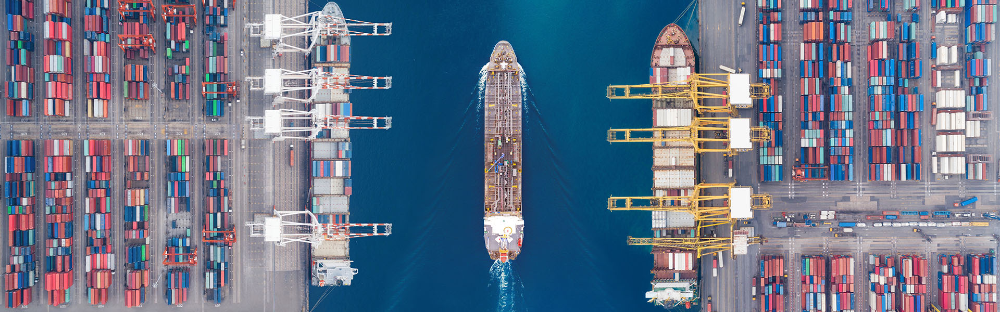

Погрузка контейнеров. В каких случаях требуется эскиз или НТУ?
Для данного типа транспортировки важно тщательно закрепить перевозимые объекты, чтобы избежать их опрокидывания и сдвигов. Если это грузы, которые перевозятся навалом, их поверхность тщательно разравнивается. Бьющиеся детали (если таковые имеются) должны быть защищены от повреждения специальным упаковочным материалом. Пломбировка составов проводится в присутствии заказчика.
Транспортная компания «Промресурс» осуществляет грузоперевозки по всей территории России. Мы предлагаем отправку товаров на открытых платформах, в универсальных контейнерах и вагонах. Специалисты компании оперативно оформят необходимые документы. Мы также берем на себя погрузочные и другие работы. Наши клиенты могут отслеживать местонахождение отправленных товаров на всем пути их следования. Если Вас интересует перевозка грузов на открытом подвижном составе, свяжитесь с нами через онлайн-форму или по телефону. Наши менеджеры рассчитают стоимость транспортировки товаров и ответят на любые интересующие вопросы.
Транспортная компания «Промресурс» осуществляет грузоперевозки по всей территории России. Мы предлагаем отправку товаров на открытых платформах, в универсальных контейнерах и вагонах. Специалисты компании оперативно оформят необходимые документы. Мы также берем на себя погрузочные и другие работы. Наши клиенты могут отслеживать местонахождение отправленных товаров на всем пути их следования.
Страхование грузов в ТТ Клубе – это:
- Максимально возможный набор застрахованных рисков в соответствии с последней редакцией классических английских правил страхования (Institute Cargo Clauses 1/1/2009).
- Включение в стандартное покрытие рисков погрузо-разгрузочных работ и перегрузок/транзитного хранения в пути.
- Широкий перечень категорий грузов.
- Оперативное согласование условий страхования для «нестандартных» грузов.
- Возможность оформления как отдельных сертификатов (полисов) страхования на разовые перевозки, так и работы по ежемесячным или ежеквартальным декларациям в рамках генерального договора (полиса).
- Онлайн-платформа для страхования грузов TT Club Forwarders, позволяющая иметь доступ к оформлению сертификатов страхования 24/7 и получать всю страховую документацию оперативно и в электронном виде.
Заголовок H4
Наши клиенты могут отслеживать местонахождение отправленных товаров на всем пути их следования. Если Вас интересует перевозка грузов на открытом подвижном составе, свяжитесь с нами через онлайн-форму или по телефону. Наши менеджеры рассчитают стоимость транспортировки товаров и ответят на любые интересующие вопросы.
